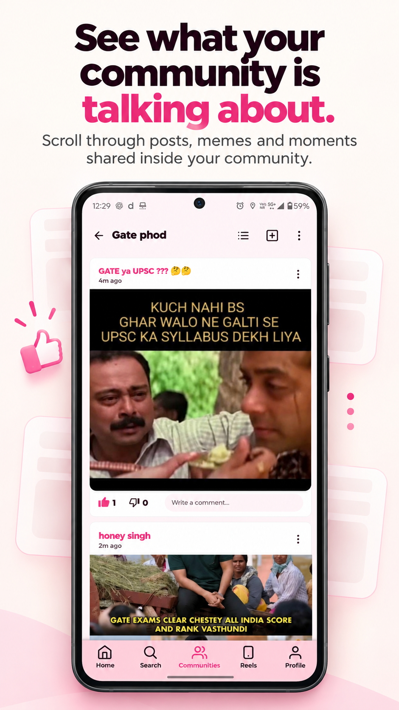
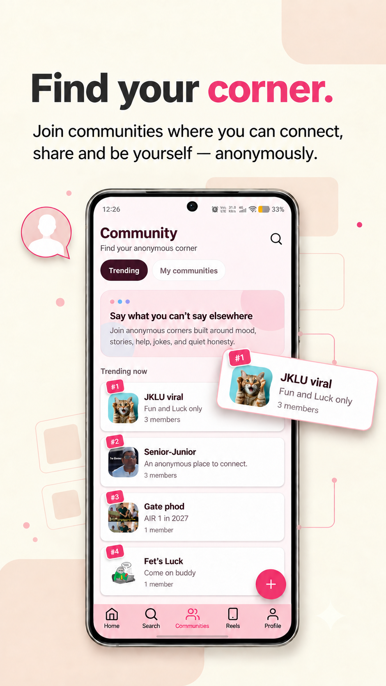
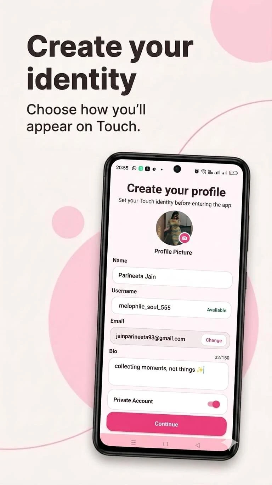
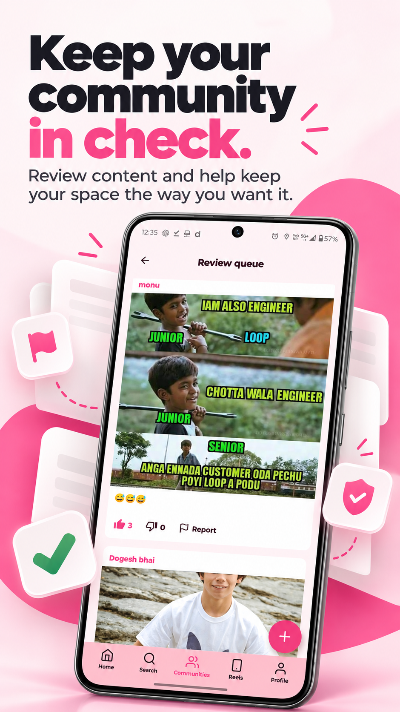

Find your communities
Discover community spaces, view their rules and visibility, then join or request access when a community requires approval.
Touch is now on Android
Touch gives people a place to join communities, share posts anonymously, and connect through conversations that feel easier to enter.
Download Touch from the Google Play Store.


Made for communities
Touch is built around communities where people can read, post, reply, and chat without making public identity the center of every interaction.
Join spaces by interest, contribute to a shared feed, and take part in a community flow that gives people room to participate thoughtfully.
Inside Touch
Discover community spaces, view their rules and visibility, then join or request access when a community requires approval.

02Create the profile and identity you want to bring into your community spaces.

03Community content can move through a review queue where members and moderators help decide what gets published.
Community feeds and conversations give members a place to continue the conversation beyond joining.
Built with care
Touch includes community guidelines, reporting, moderation tools, child safety standards, and account deletion support so people know how to participate and where to get help.
Now on Google Play
Download Touch from the Google Play Store.